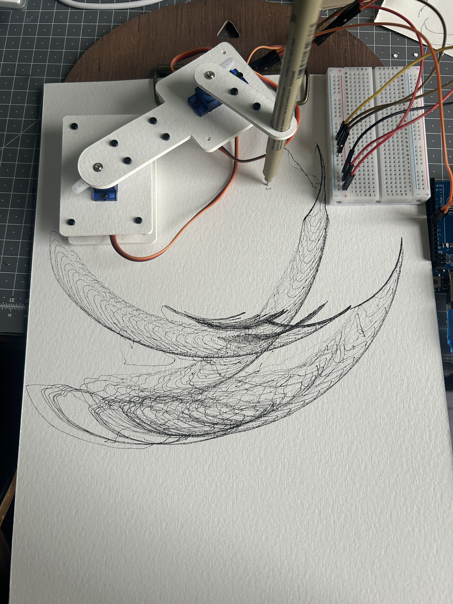
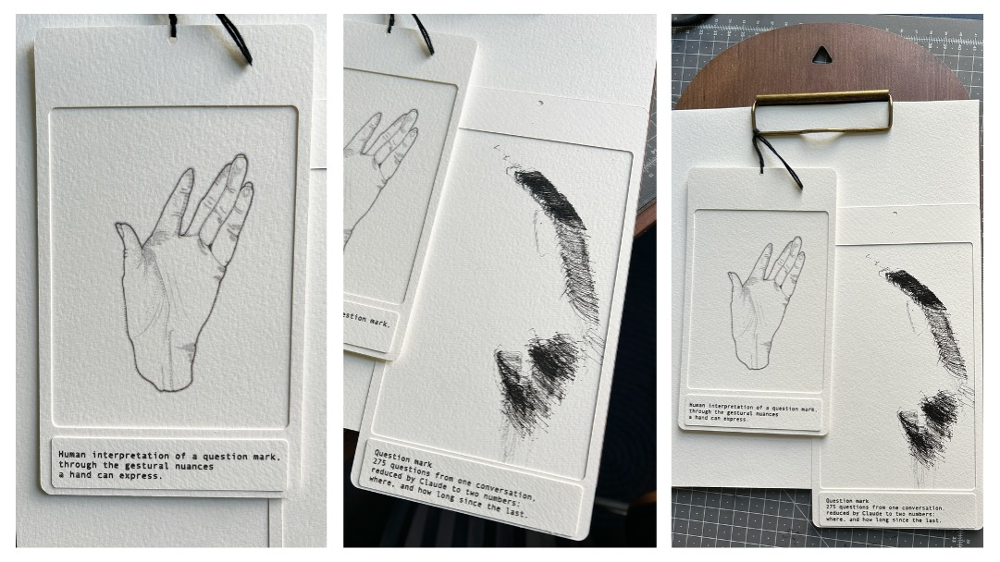
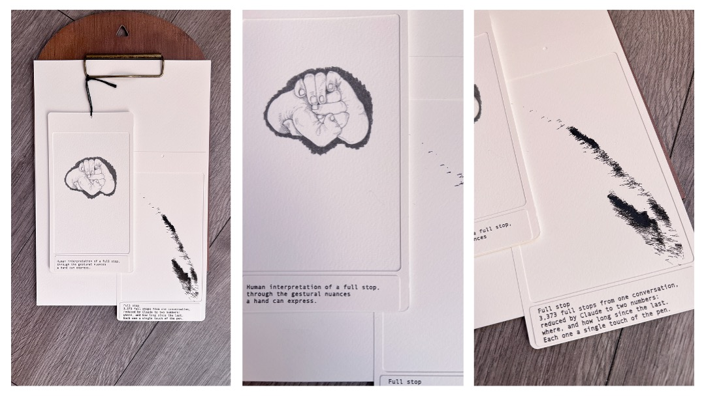

Learning to build a drawing arm: parts, diagrams, wiring and code
A working record of building a two-servo pen arm on an Arduino. Each entry notes what was made, what went wrong, what changed, and exactly how it is wired and coded, so it can be rebuilt.
The arm is groundwork for The Secret Lives of Punctuation. The aim is for it to draw punctuation marks from the conversation data on the same sheet as my own hand-drawn gestures, so the human marks and the machine's marks sit as two separate outcomes.
Aim
I think the process matters more than the outcome. We spend our lives developing things and are often disappointed with the result. So anything I build, I will log.
At my PhD interview, it was suggested that I look into robotics. In preparation for a potential five to eight year PhD, I wanted to understand what that might involve, so I started today with a very simple drawing machine built from cheap materials and code I found online.
The aim is to make things that exist in the physical world, and to see what happens when a bot’s output becomes a mark on paper. This will extend one of the marks in The Secret Lives of Punctuation. I will make my part: hand-drawn gestures, Cricut-cut shapes and expressive keyboard marks. The bot has already produced a sonic version of each mark’s data, but not yet a drawn one. This arm may be a way to get it onto paper. It is an awkward machine, so the bot’s language gets translated through it. How do its marks diverge from, or relate to, mine?
Method: I draw first
I respond to each punctuation mark by hand first: a drawn gesture, cut shapes and colour, and what I call keyboard painting, using elements of the mark alongside other marks.
Only when that is finished do I look at the bot’s response, so its marks never influence mine.
I then compare the two. Things I had not envisaged only show up once the making is done, which seems right to me: as humans we advance through lived experience, and by reflecting on it.
What the experiments are telling me so far
What I’m realising as I do these experiments is that feeling, in the human sense, can’t derive from a vector space, a space made of numbers. Feeling is part of the physical world. It is only when the machine translates the data that an equivalent of poetry occurs. Our bodies rely on gravity, and emotions are in part a form of survival, helping us sense fear, rejection, happiness and sadness.
Rules for the build
No soldering.
As cheap as possible, from one shop.
I write the code myself and use help to check it.
Log the mistakes as well as the results.
Entries
01
Two servos and a paper arm
Done
02
Writing the code by hand
Done
03
A raised base and the first loops
Done
04
A shield and a pen lift
Done
05
The pen lift moves
Done
06
Three servos: the arm and the pen lift together
Done
07
First punctuation mark from data: the full stop
Done
08
Second punctuation mark from data: the question mark
Done
09
The full stop again, with all 3,373 marks
Done
01
Two servos and a paper arm
16 October 2026
Both servos sweep. The arm draws arcs.
First run (video)
The first run: arm 1, arm 2 and a fine-liner pen drawing arcs on watercolour paper. Base not yet fixed down. Powered over USB from the laptop.
Board:Arduino Uno R3
Software:Arduino IDE 2.3.10
Servos:2 x SG90 micro servo
Pins:8 (servo 1), 9 (servo 2)
Power:USB, 5 V
Library:Servo
The first experiment was to get two servos moving and to see whether a paper arm built on them could hold a pen and make a mark. Both servos sweep, and with arm 1, arm 2 and a fine-liner in place the arm draws overlapping arcs. Nothing is calibrated yet and the base is not fixed down.
Materials
Item
Qty
Notes
Cost
Arduino Uno R3 with USB cable
1
USB-A to USB-B cable
£8.46
SG90 micro servos
4 in pack, 2 used
Listed as SG90 with metal gears, so possibly MG90S
£7.29
ELEGOO jumper wires, 120 pcs
1 pack
Male-to-female, male-to-male and female-to-female
£6.99
Solderless breadboard, 400 points
1
Used for the + and − power rails
£4.99
Moqinai M2 screw, nut and washer set, 1215 pcs
1 set
Socket-head cap screws, 4 to 20 mm, hex key included. Washers are spring (lock) washers.
£6.99
300gsm watercolour paper, laminated
–
Arms and base plate, cut on a Cricut Air 2
already owned
Fine-liner pen
1
Sits in a 9 mm hole in arm 2
already owned
Wooden board and clip
1
Holds the paper still
already owned
Bought items total £34.72. No soldering: a servo plug is three female sockets, so male-to-male jumpers join it to the breadboard or the Uno.
Swipe sideways to see the whole diagramSide view of the stack, not to scale. Only the horns and arms turn; the servo bodies and the base plate stay still.
Base plate on standoffs. Servo 1's body hangs through a window in it, with its tabs resting on top.
Arm 1 (110 x 24 mm) on servo 1's horn. Servo 2 sits in a window at the far end, with its tabs resting on top of arm 1.
Arm 2 (80 x 16 mm) on servo 2's horn.
Fine-liner pen through a 9 mm hole near the end of arm 2, tip on the paper. The pen stays down, so the line is continuous.
How the paper arm fixes to the servo
Swipe sideways to see the whole diagramClose-up of one joint, side view, not to scale.
The servo's own small silver screw goes down through the paper arm and the horn into the shaft. In the latest file the hole in the arm is 2.4 mm, so the screw head clamps the paper to the horn.
The white plastic horn pushes onto the servo shaft. Choose the single-arm horn; the cross-shaped one gets in the way, and a two-arm horn can be trimmed.
The shaft turns when the servo moves.
The servo body hangs below the plate, with its tabs resting on top.
Measurements
What
Size
SG90 overall length, with tabs
32 mm
SG90 body length
22 mm
SG90 tab hole spacing
28 mm
Window for a servo body
21.8 x 12.5 mm (snug fit, tested)
Tab slots
3.6 x 2.2 mm, 14 mm either side of the window centre
Layer-fastening holes
2.2 mm, for M2 6 mm screws
Servo tab screws
M2 8 mm
Horn-screw hole in the arms
2.4 mm (latest file)
Pen hole in arm 2
9 mm
One laminated layer of 300gsm paper
about 0.4 to 0.5 mm
Layers per part
4 for the base plate and arm 1, 2 to 3 for arm 2
Each layer is cut separately and then glued, with screws through the layer holes to keep them aligned. This worked better than cutting a glued stack.
Cut file (Cricut)
Cut file layout, version 5. The whole file is 120 x 140 mm.
Cricut Design Space settings
Design Space reads the millimetre values in the file as inches, so the upload comes in far too large.
Select all, keep the padlock locked, and set the height to 5.51 in. The width follows.
Check that the holes and windows show as empty, and do a test cut on scrap first.
Mat: 12 x 12 in.
Latest cut files (SVG)
Part
Design Space size
Notes
File
Base plate (servo 1)
15.0 x 10.4 cm
4 plates, each 70 x 50 mm, with a 21.8 x 12.5 mm window, tab slots and four corner holes. Cut once for 4 layers.
Arm 1 is joined to a 50 x 50 mm block with the window for servo 2, so it is cut as one piece. The 50 x 50 mm plate below it has four corner holes only.
Each file sits on a canvas the same size as the artwork. Import with lock proportions on, and check the size in Design Space against the table before cutting. These replace the single combined file shown above.
How the file changed
Version
Change
Why
v1
First file
Window sized from the servo's published dimensions
v2
Windows 22.8 mm. Round tab holes replaced with 3.6 x 2.2 mm slots
Servo too loose in the window, and one tab hole lined up while the other did not
v3
Windows 22.2 mm
Still loose
Window test
Small test piece with four window sizes
Cut to find the fit rather than guess. 21.8 mm was the right one.
v4
Windows 21.8 mm
Snug fit, servo body is 22 mm
v5
Horn-screw hole 2.4 mm (was 6 mm). Added a test strip of holes from 2.0 to 2.8 mm
The 6 mm hole let the screw head drop through and the arm wobbled
Wiring
Swipe sideways to see the whole diagramWiring diagram. The Uno is simplified: pins 8 and 9 are on the digital header and 5V and GND on the power header. A wire that hops over a rail is not connected to it.
From
To
Servo 1, orange (signal)
Uno digital pin 8
Servo 1, red (+5 V)
Breadboard + rail (the red line)
Servo 1, brown (GND)
Breadboard − rail (the blue line)
Servo 2, orange (signal)
Uno digital pin 9
Servo 2, red (+5 V)
Breadboard + rail
Servo 2, brown (GND)
Breadboard − rail
Black jumper, Uno 5V
Breadboard + rail
Yellow jumper, Uno GND
Breadboard − rail
Notes
SG90 wire colours: brown is GND, red is +5 V, orange is the signal.
Each servo plug is three female sockets, so each wire needs a male-to-male jumper to reach the breadboard or the Uno. The jumper colours do not matter.
The Uno's power header, with the USB socket on the left, reads: IOREF, RESET, 3.3V, 5V, GND, GND, Vin.
The breadboard rails are not connected to anything until the 5V and GND jumpers are in. Both servos take their power from the rails.
Both servos run from the laptop's USB power. If they jitter or the Uno resets when both move, the next step is a separate battery pack for the servos with its ground joined to the Uno's GND. Never connect a battery pack to the Uno's 5V pin.
Check before plugging in
The 5V jumper goes to the + rail only, and the GND jumper to the − rail only.
All three wires are in for each servo, and no red wire is in the − rail or brown wire in the + rail.
Nothing connects the + rail to the − rail.
Code
Setting up the Arduino IDE
Arduino IDE 2.3.10. Board: Arduino Uno. Select the USB port the Uno appears on.
The sketches need the Servo library. The first upload failed with Servo.h: No such file or directory. Fix: Tools, Manage Libraries, search for "Servo" and install the one by Michael Margolis, Arduino.
Sketch 1: centre a servo
centre_servo.ino
#include <Servo.h>
Servo servo;
void setup() {
servo.attach(8); // servo 1 signal wire is on pin 8
servo.write(90); // go to the middle of the range
}
void loop() {
// nothing to repeat
}
Sets servo 1 to 90 degrees, the middle of its range, so the horn can be fitted pointing the right way. Use this before putting the horn on.
Sketch 2: two-servo test
two_servo_test.ino
#include <Servo.h> // library for driving hobby servos
Servo s1; // servo 1 (base), signal on pin 8
Servo s2; // servo 2 (in arm 1), signal on pin 9
void setup() {
s1.attach(8);
s2.attach(9);
s1.write(90); // hold servo 1 in the middle
s2.write(90);
}
void loop() {
for (int a = 60; a <= 120; a++) { // sweep servo 2 from 60 to 120 degrees
s2.write(a);
delay(20); // wait 20 ms per degree
}
for (int a = 120; a >= 60; a--) { // and back again
s2.write(a);
delay(20);
}
}
Holds servo 1 at 90 degrees and sweeps servo 2 between 60 and 120. At 20 ms per degree, each sweep takes about 1.2 seconds. This sketch was supplied by Claude for this test; the code that follows will be my own.
Earlier sketch
The first sweep, from the tutorial above: one servo on pin 8, sweeping from 10 to 180 degrees with a 15 ms delay per degree. Pin 8 is not a PWM pin and does not need to be, because the Servo library handles the timing. Saved as sketch_oct13a.
What happened, in order
1Plan and parts
On 13 October I worked out a two-servo arm from layered paper and ordered the Uno, servos, jumper wires, breadboard and M2 screws. Two servos, so the pen stays on the paper and the line is continuous. A third servo could later lift the pen.
2The servo did not fit its window
Problem The window was too long, so the servo's tab holes lined up at one end but not the other.
Fix Shortened the window in steps (v2 to v4) and cut a small test piece with four window sizes. 21.8 mm was exactly right.
3First sweep
Problem The first upload failed with Servo.h: No such file or directory.
Fix Installed the Servo library through Tools, Manage Libraries. The servo then swept.
4The arm wobbled on the horn
Problem The hole for the horn screw was cut at 6 mm, so the screw head dropped through and the arm was loose.
Fix Reduced it to 2.4 mm in v5, so the screw head clamps the paper to the horn, and added a test strip of hole sizes from 2.0 to 2.8 mm.
5Wiring the second servo
Problem The new servo's power wires went into the breadboard rails, but the rails were not yet connected to the Uno, and the feeder jumpers had gone into the wrong rows.
Fix Rewired from a table of eight connections (see Wiring): black jumper from 5V to the + rail, yellow from GND to the − rail, servo reds in the + rail, servo browns in the − rail, orange signals to pins 8 and 9. Both servos moved.
6First arcs
With arm 1, arm 2 and a fine-liner in place, the arm drew overlapping arcs on the paper. The base was not fixed down, so it also moved slightly with the arm.
What I noticed
This is the first time I have built any machine, and, more appropriately, as a creative individual, a drawing machine. From some simple code in Arduino, some jumper wires, and electrical equipment, the drawing machine created some awkward movements. In some strange way, it reminded me of Rebecca Horn’s sculptures back in 2001: a violin sawed awkwardly and piano keys randomly played notes whilst falling from the ceiling. This aspect interests me.
Question this raises
What happens when I start to develop this with robotics in my punctuation series? How is that translated in a physical world? And what does that reveal, in terms of divergences between myself and a machine?
02
Writing the code by hand
18 October 2026
Servo 2 working. Short marks.
What I changed
Servo 2 did not move at first. The signal wires were on the wrong pins, so I swapped the two orange wires between pins 8 and 9, and the second arm worked.
I cut the sweep from 60 to 120 degrees down to 80 to 88 degrees, in steps of 4, with half a second at each. The arm now makes a short mark, roughly 1 mm per degree.
I learn by copying the code first, then writing it out myself by hand, until I understand it. Help was used to check it and to point me to my slips, not to write it for me.
What I learned
A for loop has three parts: where it starts, what must stay true for it to keep going, and the step. Counting up uses <= and counting down uses >=. The test is a question, not a direction.
attach(9) says which pin the signal wire is on, and write() moves the servo.
Serial.begin(9600) is the speed of the conversation with the computer, not a time. Timing comes from delay(), in milliseconds.
println is print plus ln, for line. Every statement ends in a semicolon, and comments start with two slashes.
A servo has end stops, so I should find the safe range by stepping through angles and avoid the extremes.
With no way to lift the pen, every movement draws a line. A dot is the arm holding still, and a pen lift would need a third servo.
Mistakes along the way: a colon instead of a semicolon, the <= and >= the wrong way round (so the loop never ran), printin for println, and leaving out attach.
Code
short_mark.ino
#include <Servo.h> // library for driving hobby servos
Servo s2; // servo 2 (in arm 1), signal on pin 9
void setup () {
s2.attach(9); // servo 2's signal wire is on pin 9
Serial.begin(9600); // speed for sending numbers to the Serial Monitor/ fixed just a tool to make it talk
}
void loop() {
for ( int a = 80; a <= 88; a += 4) { // up: 80, 84, 88 / start at 80, and keep going while a is 88 or less, adding 4 each time
s2.write(a); // move servo 2 to angle a
Serial.println(a); // show the angle in the Serial Monitor/print line short hand for println
delay(500); // wait half a second
}
for ( int a = 88; a >=80; a -= 4) { // back down: 88, 84, 80 / start at 88, and keep going while a is 80 or more, subtracting 4 each time
s2.write(a); //write servo 2 to angle a
delay(500); // wait half a second and remember every ending use a semicolon not a colon
}
}
Copied first, then typed out by hand and checked. Servo 2 steps up from 80 to 88 degrees and back, half a second at each step.
03
A raised base and the first loops
20 October 2026
Loops that drift along the page.
Result (photo)

Each sweep is a stack of loops, drawn by the sketch below, with the centre of servo 1 nudged on after every circle.
What I changed
Arm 1 now has a 5 cm square block around servo 2, which holds the servo more firmly. A lower plate, 37 mm below it, will carry the weight on the table once the long screws arrive. The base plate for servo 1 was recut with the same servo opening.
Arm 2 is shorter, 45 mm from the horn hole to the pen hole instead of 65 mm. The pen hole is now 10 mm, because the 9 mm hole came out too small once cut. The screw holes moved along so the horn clears the first screw.
I copied the circle sketch, then typed it out again myself and worked through what each line does, fixing my own slips. I then added a line that moves the centre on after each circle.
What I learned
Two servos only draw a loop when the arms are bent against each other. With the arms in line, the same code draws a thin sliver.
sin and cos work in radians, so the angle is converted first. Using cos for one servo and sin for the other makes the loop.
The step size sets how smooth the circle is, and delay() sets how fast it is drawn. The nudge goes after the for loop, so it happens once per circle, not on every step.
writeMicroseconds() wants microseconds, not degrees. It made very little difference here, so I went back to write().
Small circles come out boxy. The servos move in whole degrees and have slack, and the pen drags. Bigger swings are rounder, and the roughness is part of the drawing.
Check the size in Design Space. A file with a blank margin scaled down and shrank the holes.
Mistakes along the way: a colon instead of a semicolon, a setting named twice, cos used for both servos, =+ instead of +=, the wrong swing in one line, and degrees passed to writeMicroseconds().
Code
drifting_loops.ino
#include <Servo.h>
// tells the Arduino to bring in the Servo library that's already installed
Servo s1; // servo 1 (the base), attached to pin 8
Servo s2; // servo 2 (in arm 1), attached to pin 9
float start1 = 90; // starting angle in degrees. float means it can have decimals, and it can be changed later
float start2 = 84;
float swing1 = 20; // how far the servo moves either side of its start angle (degrees)
float swing2 = 40;
void setup () {
// runs once at the start
s1.attach(8);
s2.attach(9);
Serial.begin(9600); // lets the Arduino send numbers to the Serial Monitor
s1.write(start1); // move to the start angle (90 in this case)
s2.write(start2); // move to the start angle (84 in this case)
delay(1000); // wait one second (delay is in milliseconds)
}
void loop() {
// repeats forever
for (int t = 0; t <= 360; t += 10) { // t goes round the circle in steps of 10 degrees
float rad = radians(t); // translates the angle t from degrees into radians
float a1 = start1 + swing1 * cos(rad); // angle for servo 1: moves swing1 degrees either side of start1
float a2 = start2 + swing2 * sin(rad); // angle for servo 2: sin instead of cos makes a loop, not just a line
s1.write(a1);
s2.write(a2);
Serial.println(a1); // shows the angle in the Serial Monitor
delay(50); // wait a twentieth of a second before the next step
}
start1 = start1 + 3; // after each full circle, move the centre of servo 1 on by 3 degrees
delay(2000); // wait 2 seconds before the next circle
}
Copied first, then typed out by hand and checked. Servo 1 and servo 2 follow cos and sin to draw a loop, and the centre of servo 1 moves on 3 degrees after each one.
04
A shield and a pen lift
20 October 2026
Fewer wires. Pen lift built in paper, not yet moving.
The wires were the biggest problem, so I stacked a sensor expansion shield on top of the Uno. Each pin number on the shield is a row of three pins: S (signal), V (power) and G (ground). The servo plugs go straight in, with the orange wire on S, red in the middle and brown on G. The breadboard and the jumper wires are no longer needed.
Servo 1 is in row 8 and servo 2 in row 9, so the sketches did not change. I left the yellow jumper and the blue terminal on the shield alone, because the servos run from USB power.
Once a sketch is uploaded, it is stored on the Uno, so the arm can run from any USB power. Python reading the data over serial will need the laptop connected.
I started a pen lift: a third servo, planned for row 10, stood upright in a wall plate so that its horn swings in an upright plane and tilts a paper lever. A pen standing in the lever is lifted and lowered by it. Built in paper so far, not yet moved by the servo.
What I learned
A servo lying flat can only sweep sideways, so it cannot press a pen down. Standing it upright, with its shaft pointing out of a wall plate, makes the horn swing up and down.
The lever is a flat plate in an upright plane, so a hole through it points sideways. A pen standing upright cannot go through a hole in the lever. It has to stand in a gap between two plates.
Joining parts with screws and a gap between them, which I did to the wall, makes a much sturdier structure than a single plate. The lever now follows the same idea.
Four layers of 300gsm paper are about 1.6 mm, so I can plan a thickness in layers.
A pen lift only needs a few millimetres of movement, so the lever only tilts a few degrees.
Mistakes along the way: the first idea for the lift was a cam on a flat servo, which only moves sideways. The first lever had a closed pen hole, which would have held the pen sideways, and I spotted that. My servo sat with its shaft left of centre when the lever file expected it on the right, so it needs turning 180 degrees. The small pen-guide plates had screw holes that did not line up with anything. The 10 mm screws I have are too short for the new joints, which need about 16 mm.
How the pen lift works
Wall plate (4 layers). Servo 3 sits in a window in it, with its shaft pointing out of the front and its horn pointing right.
Horn screw, an M2 screw through the horn's far hole, slides in a slot in the lever.
Lever, hinged on a long screw through the lower-left corner hole of the wall, with spacer rings so it clears the wall. When the horn turns, the lever tilts.
Twin plates. The lever is two plates side by side, joined with screws and nuts as spacers, with a gap about the width of the pen plus half a millimetre. The back plate has the slot.
Pen stands in the gap between the plates, held between two screws either side of it.
Collars, one above and one below the plates, are fixed to the pen with about 1 to 2 mm of play. The top collar rests on the plates and is lifted by them. The pen's own weight puts it back on the paper.
Still to design: a mount for a guide stack that keeps the pen upright, and how the whole lift attaches to arm 2.
Parts and cut files
Part
Size
Notes
Wall plate
70 x 58 mm, 4 layers
Servo window 21.8 x 12.5 mm, tab slots, four corner holes. Sheet of four: 14.4 x 12.0 cm in Design Space.
Rear wall
Same outline as the wall
Joined to the front wall by screws, about 14 mm between the inner faces.
Base
84 x 40 mm, 20 layers
Two slots 70.5 x 1.9 mm, 14 mm between the walls, four corner holes. Sheet of ten, cut twice: 17.2 x 21.6 cm.
Lever, back plate
About 100 x 24 mm, 4 layers
Latest version: long horn slot, middle hole, two pen-side holes, head flat top and bottom. Sheet of four: 10.26 x 13.08 cm.
Lever, front plate
About 100 x 24 mm, 4 layers
As the back plate, without the slot. Same sheet size.
Collars
40 x 26 mm, 4 layers each
10 mm pen hole, two small screw holes. One above the lever and one below, both fixed to the pen. Sheet of eight: 8.2 x 11.0 cm.
Spacer rings
6 mm across, M2 hole
On the hinge screw, between the wall and the lever.
Screws
M2
The joints need about 16 mm. The 50 mm ones arrive between 26 October and 2 November.
What happened, in order
1Too many wires
Problem The breadboard and jumper wires were untidy, and would only get worse with a third servo.
Fix Bought a sensor shield that stacks on the Uno, with a row of three pins for every pin number.
2Fitting the shield
The shield pushed onto the Uno, and both servos plugged straight into rows 8 and 9. They moved as before, with no other wiring.
3Lifting the pen
Problem With no way to lift the pen, every movement draws a line. A flat servo cannot press down either.
Fix A third servo stood upright in a wall plate, so its horn swings in an upright plane and tilts a lever.
4The wall and its frame
A single wall plate in a flat base looked fragile, so I put a second wall behind it, joined with screws that make a gap for the servo body. That held up well. The base now has two slots to match.
5The lever
Problem A closed pen hole in an upright plate holds the pen sideways, and a notched single plate was too thin to hold the collar.
Fix Two plates with a gap, the pen between them, and a collar above and below.
6Left open
Nothing has been moved by the third servo yet. The guide mount is not designed, and the servo needs turning round before the lever goes on.
05
The pen lift moves
October 2026
The lift raises and lowers the pen and makes a mark. The collars are held on with masking tape until the long screws arrive.
Board:Arduino Uno R3 with V5 sensor shield
Servo:1 x SG90, on its own, not yet on the arm
Pin:10 (row 10 of the shield)
Power:USB, 5 V
What I changed
I took the hinge away. The lever is now fixed to the horn with two small screws, one in each of two holes, and it turns with the horn about the servo shaft. The slot in the back plate is now only somewhere for the screws to sit.
The small holes in the horn were too small for my M2 screws, so I used smaller screws that fit them.
The head of the lever had a short flat underside, about 15 mm against 23 mm on top, so the lower collar would not sit flat. I redrew both lever plates so the underside is about 22 mm flat, then cut and built them. The original collars fit the pen well, so they stay as they are.
I wrote the up and down code myself.
What I learned
Two loops that follow each other do different jobs from one loop inside another. My first attempt nested them, and the second loop never ran, because it started at a bigger number than it was allowed to count up to.
Counting down needs a minus (a--) and a test that checks for bigger-or-equal (>=), not the other way round.
Opening the angle up from 100 to 130 did not make a harder mark. It only made the move slower. Cutting the delay from 20 to 5 did, because a faster move hits the paper harder. I had expected the opposite.
The up and down angles are two variables at the top of the sketch, penUp and penDown, so I can tune them without touching the loops. I settled on 80 and 100.
Pen lift running (video)
The pen lift on its own, not yet on the arm. Only the two collars are held on with masking tape, until two long screws fix them to the lever. The tip draws a curved mark because the lever swings about the servo shaft, so the pen lands on an arc and drags a little. I like the marks it makes.
Mistakes along the way: the first sketch had a missing letter in a variable name, a colon where a semicolon belonged, and a double quote closed with a single one. I attached the servo to the wrong pin at first, and pin 9 turned out to be fine only because nothing else was plugged in for this test. Nothing is on the arm yet.
The code
pen_lift_test.ino
#include <Servo.h>
Servo lift;
int penUp = 80;
int penDown = 100;
void setup() {
lift.attach(10);
Serial.begin(9600);
lift.write(penUp);
delay(1000);
}
void loop() {
for (int a = penUp; a <= penDown; a++) {
lift.write(a);
delay(5);
}
Serial.println("down");
delay(1000);
for (int a = penDown; a >= penUp; a--) {
lift.write(a);
delay(5);
}
Serial.println("up");
delay(1000);
}
Delay of 20 was slow and made a faint mark. A delay of 5 gave a clear, solid mark.
Cut files to download (SVG for Cricut Design Space)
Part
Design Space size
Notes
File
Wall plate
14.4 x 12.0 cm
4 plates, 4 layers. Cut twice for the front and rear walls. Cut and built.
8 plates, each 40 x 26 mm, with a 10 mm pen hole and two small screw holes. Two stacks of 4 layers: one is the top collar and one is the lower collar. Cut and built, and the pen hole fits.
Import each file with lock proportions on, and check the size in Design Space matches the table. Each file sits on a canvas the same size as the artwork. All use 300 gsm paper, with 4 layers about 1.6 mm.
What happened, in order
1Fixing the lever to the horn
Problem The lever was going up and down without really being attached to the horn.
Fix A second screw in a second hole of the horn, both through the slot, so the lever turns with the horn.
2The lower collar
Problem The lower collar would not sit flush on the bottom of the arm, which was 1.5 cm long against 2.3 cm on top.
Fix New lever plates with a flat underside, so the original collar sits flush. Cut and built.
3The first run
After fixing the code, the lever lifted and lowered by 20 degrees. At first the mark was faint and the move was slow.
4Making the mark solid
Raising the angle to 130 did not help, so I put it back to 100 and shortened the delay to 5. The pen hit the paper harder and left a definite mark.
06
Three servos: the arm and the pen lift together
30 October 2026
Built and drawing. All three servos move, one after the other. The same stroke repeats, so the ink piles up.
Machine 3 running (video)
Machine 3 running the code below, about 30 seconds. The pen goes down, servo 2 and then servo 1 carry it across the paper, the pen lifts, and both servos return. It repeats the same path every time, so the ink builds up into a dense band with the thin marks of earlier runs fanning out beneath it.
Reach:pen about 204 mm from servo 1, 128 mm from servo 2
What I built
I started afresh instead of adding to machines 1 and 2, reusing what worked: the base and arm 1 from the two-servo arm, and the wall, lever and collars from the pen lift.
The block at the end of arm 1 stands on four long screws, with a 50 x 50 mm foot plate underneath. That raises servo 2 so its horn sits level, and keeps the weight of the lift from hanging only on the horn.
The carriage is a floor on servo 2's horn with a slotted top on it, 12 layers, with two slits for the walls. I added the slits because a separate stand was going to be too heavy. Four screws and nuts hold it together, and the walls stand in the slits.
Servo 3 sits between the two walls and lifts the pen, exactly as in Experiment 05.
Servo 1 turns the whole arm, servo 2 is the elbow, and servo 3 lifts the pen.
What I learned
The code runs in the order I write it, in real time. One loop finishes before the next one starts, so the order of the loops is the order the machine moves. Nesting a loop inside another, as I would for a grid in p5.js, ran the whole pen lift for every single degree of the arm. Putting the loops one after another fixed it.
Pen down, then the arm moves, then pen up. Without that order the pen only touched the paper after the arm had stopped.
A loop that counts down needs >= and --. My return loop for servo 1 started with c <= 50 while counting down from 90, so it was false straight away and never ran. Servo 1 never came back, and each cycle began with a fast jump.
The angles in setup() have to match where the loop starts, or the first cycle jumps while the pen is on the paper. I fixed it by moving the ranges so they start and end at 90, the same as setup().
Servo 1 only seemed to move a little at first because my sketch never wrote to it again after setup(). Adding its own loops made it move.
With penUp at 85 and penDown at 100 the lever only swings 15 degrees, and the pen barely clears the paper. 80 and 100 gave 20 degrees in Experiment 05. The pen also tilts as the lever swings about its hinge, so it needs some margin.
Servo 2's swing is limited by the four long screws, to about 62 to 118 degrees if the screw tops stick up. I kept both servos to 90 to 110, well inside that.
The loop repeats exactly, so the same stroke goes over itself and the ink builds up. To get different marks, the numbers have to change from one cycle to the next.
In my own words
What I learned today is you write the code sequentially in the order that it is performed. You always include brackets, as you do in p5.js, for each. Different requests you ask it to do. Int is instead of let. And the comparison operators are the same as p5.js.
Although I still struggle a bit to understand the up and down in relation to comparison operators and often get this the wrong way around.
I understand variables and the importance of giving different variables to different tasks. I understand the for statement in enabling the pen to move from one direction to another as a way of incrementally going through the steps.
The language is slightly different and I still have lots to learn, but gradually getting there.
Mistakes along the way: a missing space in intb, the wrong letter (a for b) in a loop's test and step, delat for delay, s1.write(90) written twice when the second should have been s2, and one missing { that left the last lines outside loop(). Most were caught by reading the sketch line by line against the loop above it.
The code
machine3_arm_and_lift.ino
#include <Servo.h>
Servo lift;
Servo s1;
Servo s2;
int penUp = 85;
int penDown = 100;
void setup() {
s1.attach(8);
s2.attach(9);
s1.write(90);
s2.write(90);
lift.attach(10);
Serial.begin(9600);
lift.write(penUp);
delay(1000);
}
void loop() {
for (int a = penUp; a <= penDown; a++) { // pen down
lift.write(a);
delay(5);
}
for (int b = 90; b <= 110; b++) { // servo 2 moves the pen
s2.write(b);
delay(20);
}
for (int c = 90; c <= 110; c++) { // then servo 1
s1.write(c);
delay(10);
}
for (int a = penDown; a >= penUp; a--) { // pen up
lift.write(a);
delay(5);
}
for (int b = 110; b >= 90; b--) { // servo 2 comes back
s2.write(b);
delay(20);
}
for (int c = 110; c >= 90; c--) { // servo 1 comes back
s1.write(c);
delay(10);
}
Serial.println("down");
delay(1000);
Serial.println("up");
delay(1000);
}
Each loop does one job and closes before the next one starts. Servo 2 and servo 1 move one after the other, not together, so the stroke is two short lines joined, not one diagonal. The two Serial.println lines print after the whole movement, so they do not match what the pen is doing. To move both servos at once, both write lines can go in one loop, because the two ranges have the same number of steps. Not tried yet.
Cut files (machine 3, SVG for Cricut Design Space)
Design Space reads the size of the artwork, not the canvas. Import each file with lock proportions on and check the size matches this table.
What happened, in order
1Raising the second arm
Problem Servo 2's horn needed to sit higher and level, and the lift was going to put a lot of weight on it.
Fix Four long screws under the block, with a 50 x 50 mm foot plate underneath. The screws were longer than I had planned for, but they do the job.
2A lighter carriage
Problem A separate stand for the walls was going to be too heavy.
Fix A slotted top with the wall slits cut into it, held on with long screws, the same way as the base.
3Combining the code
Problem My first combined sketch would not compile, and then it nested the pen lift inside the arm's sweep.
Fix Corrected the typos one by one, then took the loops out of each other so that each one does one job, one after another.
4Adding servo 1
Problem Servo 1 barely moved, because the sketch only ever told it to go to 90. Once I gave it loops, a return loop that never ran made it jump at the start of each cycle.
Fix Corrected the test in the return loop, and moved both ranges so they start and end at 90, where setup() puts the servos.
5The lift
Problem At penUp of 85 the pen hardly left the paper.
Fix To try next: a lower penUp, 80 first, then 75, watching that the lever does not hit the wall or the screws.
6Marks piling up
The machine repeats the same path every cycle, so the ink builds up in one place. That is the reason to make the data, and not a fixed loop, decide each mark next.
07
First punctuation mark from data: the full stop
11 November 2026
Drawing from the data. 20 full stops, looped on purpose to see the rhythm.
Machine 3 drawing the full stops (video)
Machine 3 running the code below. Each full stop lands where the data says and stays for as long as the data says.
The result: my hand-drawn response and the machine's marks from the data
The finished page. My own hand-drawn response, and the marks the machine made from the data for the full stop.
Board:Arduino Uno R3 with V5 sensor shield
Servos:3 x SG90 (servo 2 not used in this sketch)
Data:punctuation_data.csv, 20 of 3,373 full stops
Pen:penUp 75, penDown 100
Sketch designed with:Claude Sonnet 5.5, 11 November 2026. Prompt: asked Claude to decide how the mark should be drawn from the data points.
In my own words
This is the first in my series developing a drawing machine that makes marks representing my punctuation data. In this experiment I worked from the data for the full stop. It was sampled down to 20 of the 3,373 full stops, an amount my machine could manage, as any more would have been too much.
As you can see, there are limits to how the machine can interpret those marks. It drags and slides in a slightly haphazard, clumsy way. It is not the clinical translation evidenced through the sound data, because it relies on a human-made machine that is dependent on gravity, weight and pull. Perhaps these differences highlight a vector-space version against a physical one.
I chose to let it loop, partly because a single pass was too faint, and because the repetition shows the rhythm more clearly, with the pattern in the sampled data emerging as it goes round.
When I look at my version of a hand gesture that mimics a full stop and its relation to the mark produced by a bot through a handmade machine, the marks are repetitive, almost deterministic. They try to produce the same response each time, but at different data points. The humanness about it is that the human-made machine is a bit flawed, so the marks aren't as consistent as the machine would probably like. The difference between my mark-making of a full stop and a bot's is obvious. My hand gesture clearly determines some sort of finality. A full stop, for me, is a form of an ending, but for a bot, it is continuous. It is just another mark in a vast array of information.
Why have I drawn my hand gesture as a comparison? Simply because I'm a person who exists in a physical world, and I articulate it differently. My experiences are tied to lived experience, and to living on an Earth that depends on gravity. My hand is a good tool for this because it carries the complexity of a punctuation mark that the symbol couldn't hold on its own. A bot has none of that, only patterns and vector space.
What I built
I drew my own response first, by hand. Claude had not seen my drawing when it designed the sketch, so how each mark is drawn comes purely from the data points, and I logged the choice. AI as mirror, not mind.
Servo 1 turns the arm to the position of each full stop. The position in the conversation, scaled from 0 to 1000, is mapped to 90 to 110 degrees, the safe range.
The pen goes down, stays, and lifts. The gap since the previous full stop sets how long it stays, from 0.3 to 3 seconds. A long gap leaves a dark cluster of ink, and a short one is a touch.
One pass takes about 40 seconds, and the sketch goes round again until I stop it.
What I learned
map() only works with whole numbers, the same as int. The time_fraction column runs from 0 to 1, so I scaled it to 0 to 1000 before it went into the sketch.
The data only decides where and for how long. How the pen moves between marks is the machine's: it drags, and the paper and the pen's weight get a say.
Because it loops, the same 20 positions repeat, so the darkness depends on how many passes I let it run, not only on the data.
Thin lines show between the marks, so the pen is probably not lifting fully. To try: a lower penUp, such as 65.
The marks landed over the printed caption on the page. Next time I will move the paper down.
The code
machine3_fullstop_data.ino
#include <Servo.h>
Servo lift;
Servo s1;
Servo s2;
int penUp = 75;
int penDown = 100;
// 20 of the 3,373 full stops
// where = position in the conversation, scaled 0 to 1000
// gap = characters since the previous full stop
int where[20] = {0, 40, 102, 148, 197, 249, 331, 393, 431, 495, 534, 602, 645, 680, 728, 819, 874, 916, 960, 1000};
int gap[20] = {59, 265, 92, 40, 236, 81, 225, 53, 180, 17, 114, 178, 18, 112, 53, 226, 72, 109, 42, 170};
void setup() {
s1.attach(8);
s2.attach(9);
s1.write(90);
s2.write(90);
lift.attach(10);
Serial.begin(9600);
lift.write(penUp);
delay(1000);
}
void loop() {
for (int i = 0; i < 20; i++) {
s1.write(map(where[i], 0, 1000, 90, 110)); // where it lands
delay(500);
for (int a = penUp; a <= penDown; a++) { // pen down
lift.write(a);
delay(5);
}
delay(map(gap[i], 0, 300, 300, 3000)); // how long it stays
for (int a = penDown; a >= penUp; a--) { // pen up
lift.write(a);
delay(5);
}
}
}
08
Second punctuation mark from data: the question mark
12 November 2026
Drawing from the data. All 275 question marks, drawn once.
Machine 3 drawing the question marks (video)
One minute of the run. Each pull of the pen is one question mark from the data.
The result: my hand gesture and the machine's drawing, each in its own frame

Left: my interpretation of a question mark, as a hand. Centre: the machine's drawing from all 275 question marks. Right: the two frames together. Each frame was cut on the Cricut, and the labels were drawn with the Cricut pen.
Board:Arduino Uno R3 with V5 sensor shield
Servos:3 x SG90: base (pin 8), pull (pin 9), pen lift (pin 10)
Data:punctuation_data.csv, all 275 question marks
Pen:penUp 70, penDown 100
Sketch designed with:Claude Sonnet 5.5, 12 November 2026. Prompt: asked Claude to decide how the mark should be drawn from the data points.
In my own words
This is perhaps the first experiment where I genuinely like the outcome. You can clearly see some parallels between the drawn response and my hand gesture.
Whether I am anthropomorphising those marks, in relation to the hand, is perhaps a question in itself.
But it's clear they're directional, and there's a slight hesitation in the mark. In that vein there is some similarity.
What I built
I drew my own response first, by hand, as a hand gesture for a question mark. Claude had not seen my drawing when it designed the sketch, so how each mark is drawn is its own interpretation of the data, and I logged the choice. AI as mirror, not mind.
Claude reduced each of the 275 question marks to two numbers: where it falls in the conversation, and how long it had been since the last one.
Servo 1 turns the arm to where the question mark falls, from 90 to 110 degrees. Servo 2 pulls the pen across the page, and the gap since the last question mark sets how far, from 2 to 20 degrees. A long gap gives a long pull.
The sketch draws once and stops. There is no loop.
I cut a frame for each drawing on the Cricut, and drew the labels with the Cricut pen, so the two can be read side by side.
What I learned
The 20-mark test was too small to mean anything. Using all 275 gave a drawing with weight and direction.
An int on the Uno only holds up to 32,767. One long gap in my first sketch wrapped round to a negative number and gave the last mark the wrong pull. In the final data every gap is capped at 2,000, and constrain() keeps the value in range.
The data only decides where and how far. The result had to correspond to the data, so it is not simply a drawing of a question mark.
Both drawings lift upwards at the end: my hand, and the machine's pulls. I think the open, lifting end of each pull is the part designed for a question. The arch itself is mostly the arm's geometry.
The run took much longer than I estimated. I have not yet found out why.
Drawing from the data. All 3,373 full stops, one touch of the pen each.
Machine 3 drawing the full stops (video)
Twenty seconds of the run. Each touch of the pen is one full stop from the data. The whole run took about 35 minutes.
The result: my hand gesture and the machine's drawing, each in its own frame

Left: both frames together on a clipboard. Centre: my interpretation of a full stop, as a hand. Right: the machine's drawing from all 3,373 full stops. Each frame was cut on the Cricut, and the labels were drawn with the Cricut pen.
Board:Arduino Uno R3 with V5 sensor shield
Servos:3 x SG90: base (pin 8), pull (pin 9), pen lift (pin 10)
Data:punctuation_data.csv, all 3,373 full stops
Pen:penUp 70, penDown 80
Run time:10:05 to 10:40, about 35 minutes
Sketch designed with:Claude Sonnet 5.5, 13 November 2026. Prompt: asked Claude to decide how the mark should be drawn from the data points.
In my own words
The comparison between my hand gesture and the data points translated through a drawing machine, leaves a trace that is not so deterministic of the data, but more of an ad hoc outcome of how the data was mapped onto the arm, and of a machine that's not perfect. It's in that imperfection that a sort of poetry happens.
In a sense, the data is not completely pointless as it does reveal lots of clusters of dots repeating heavily on top of each other, and does demonstrate the relentlessness of a full stop's use in a Claude Sonnet 5.5 conversation. The scrapes or drags are a different matter: they are where the pen doesn't quite lift up properly and drop down, so they come from the machine, not the data. The difference is more obvious in the fact that my hand gesture is more finite. It evidences a strong, coherent, and confident ending signal, whereas the data dots feel less so.
What I built
This redoes Experiment 07, which drew only 20 of the full stops. This time the machine draws every one of them. My hand gesture is the one from Experiment 07.
Claude reduced each full stop to two numbers: where it falls in the conversation, and how long it had been since the last one. The gap is square-rooted, so the very long gaps do not flatten everything else.
Servo 1 turns the arm to where the full stop falls. Servo 2 moves the pen up the page by the gap. Each full stop is a single touch of the pen, not a pull.
I wrote the sketch myself with hints, and learned how to use writeMicroseconds() for finer positions, PROGMEM to keep 6,746 numbers in the Uno's flash memory, and a touch() function for the pen.
I tested the sketch on a sample first, drawing every 33rd full stop (103 of the 3,373), before running them all.
What I learned
At penDown 100 the pen pressed into the paper and dragged, leaving scribbles instead of dots. Lowering it to 80 gave a dot, and a shorter pen travel was faster too.
3,373 marks is a lot of ink on one small area. The sparse early dots read as a trail, and the dense end is almost solid black.
Some screws on the arm worked loose during the run.
Partway through, the drawing ran towards the edge of the sheet, so I moved the paper by hand. That is a human intervention in the machine's drawing, and I am logging it here.
The run took about 35 minutes, longer than I expected. The question mark run also took longer than I expected, and I have still not found out why.
A wider range for servos 1 and 2 than 90 to 110 degrees, so the marks use more of the page. The safe range for servo 2 looks to be about 62 to 118.
A mark drawn from more than two numbers, such as a hook for the question mark. For that I would need more from the original text than position and gap.
Why the 275-mark run took so long. To check: print the mark number to the Serial Monitor and time the run.
Whether the colon count (9,727) is genuine punctuation or conversation labels, before I draw it.
How many of the full stops the machine can draw before the page is too dark, and whether more than 20 is worth it.
Next steps
Experiment 10: another mark from punctuation_data.csv, such as the comma, with a hand gesture of my own beside it.
The bot decides how each mark is drawn: the gesture, the size, the speed and the number of passes. The data decides when. Each choice is logged with the model, the date and the prompt, and I write and learn the code.
Photograph the result so my hand-drawn response and the machine's marks sit side by side, with less else on the page.
Log the intended path next to what was actually drawn.
Later: a camera to look at the drawing, and a separate battery pack if the servos stutter.